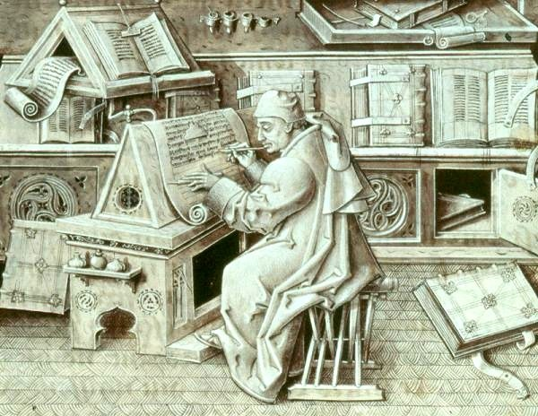
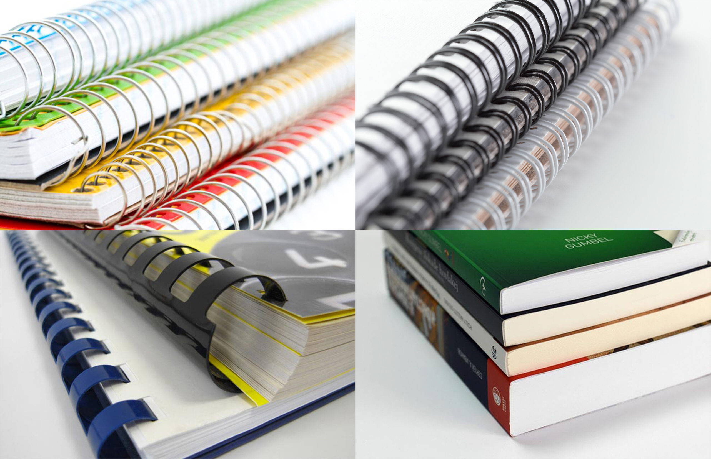
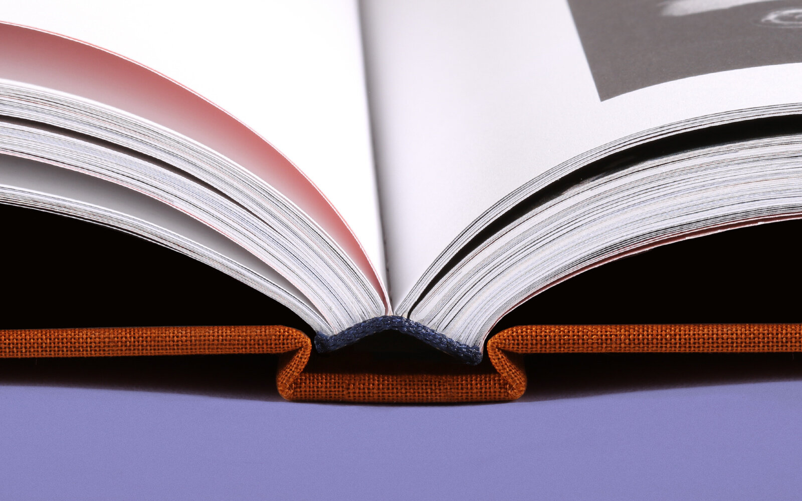
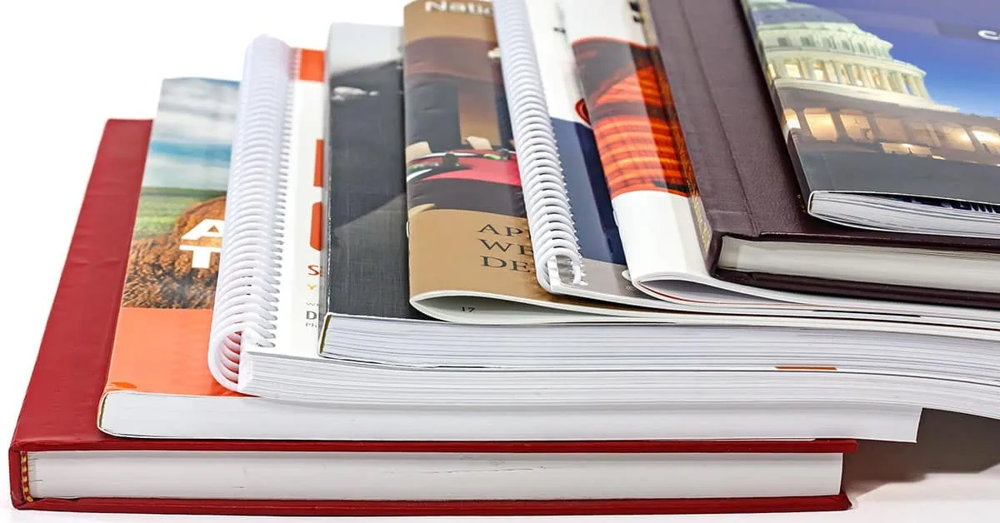
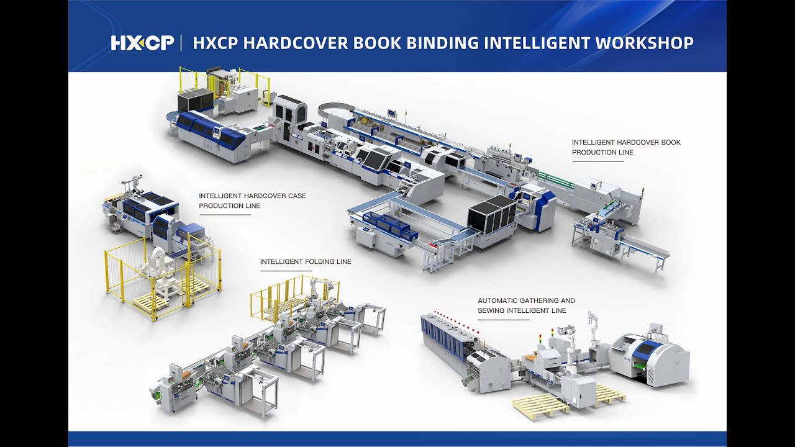

Historija knjigovezačke dorade

Knjigovezačka dorada ima dugu historiju koja seže do antike. Prve knjige su bile svitci, a kasnije se razvija kodeks - oblik knjige kakav danas poznajemo.
U srednjem vijeku, knjige su se ručno prepisivale u samostanima, a bile su ukrašavane zlatom i minijaturama. S izumom tiskarskog stroja 15. stoljeća, knjigoveštvo se masovnije razvija.
Industrijska revolucija donijela je mehanizaciju procesa dorade, što je omogućilo masovnu proizvodnju knjiga.
Nazad
Vrste povezivanja knjiga

- Mehki uvez (broširano) - Listovi se lijepe za korice, najjeftinija opcija
- Tvrdi uvez - Trajniji, korice su od kartona obloženog tkaninom ili kožom
- Spiralni uvez - Metalna ili plastična spirala drži listove
- Šivani uvez - Listovi se šivaju koncem prije lijepljenja
- Koptski uvez - Tradicionalna metoda šivanja bez lijepljenja
Nazad
Materijali u knjigoveštvu

| Dio knjige |
Korišteni materijali |
| Korice |
Karton, tkanina, koža, umjetna koža, plastika |
| Listovi |
Papir različitih gramatura, pergament |
| Uvez |
Konac, ljepilo, spirale, metalne obloge |
| Dekoracija |
Zlato, srebro, boje, reljefni ukrasi |
Nazad
Tehnike dorade

- Štancovanje - Izrezivanje oblika u korici
- Blind štampa - Reljefni utisak bez boje
- Toplo tiskanje - Korištenje topline i folije za dekoraciju
- Zlatanje - Nanošenje zlatnih listića
- Intarzija - Umetanje različitih materijala u korice
Nazad
Zašto je dorada važna?

Dobra knjigovezačka dorada:
- Produljuje životni vijek knjige
- Povećava estetsku vrijednost
- Pruža zaštitu unutrašnjim stranicama
- Može povećati komercijalnu vrijednost knjige
- Pomaže u očuvanju kulturne baštine
Nazad
Savremene tehnologije

Današnje knjigoveštvo koristi napredne tehnologije:
- Digitalni dizajn korica
- 3D tisak za dekorativne elemente
- Lasersko rezanje i graviranje
- Eko-prihvatljivi materijali
- Robotizirane linije za masovnu proizvodnju
- Digitalni arhivski materijali za restauraciju
Nazad